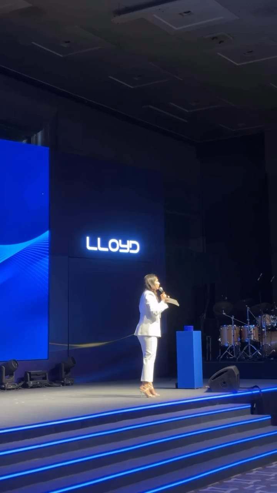
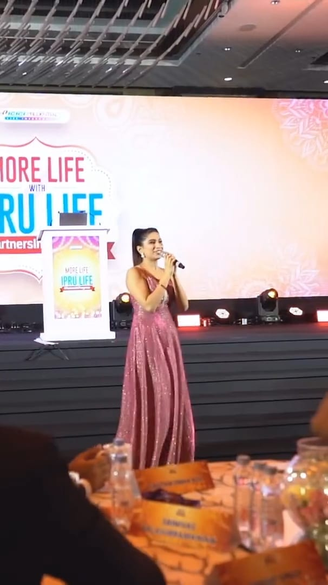
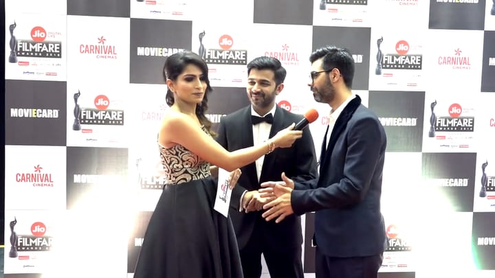

Watch
Short clips from her events, titled by client and room. Every clip plays muted, with captions.
Nisha in 43 seconds
Moments from the clips on this page, cut in running order, from the walk-on to the stage edge.
Running order · select a moment to play from there
- 0:00Walking onCITCO · 2025
- 0:02Laughing under stage lightRaychem RPG · 2025
- 0:05At the lecternDatamatics · 2026 [DATE TO CONFIRM]
- 0:09A guest laughs out loudShapoorji Pallonji · 2023
- 0:12Among the guestsRaychem RPG · 2025
- 0:17The meet-and-greet stageLipton · 2024
- 0:20The mic goes to a guestDatamatics · 2026 [DATE TO CONFIRM]
- 0:24The mic goes to the roomHimalaya Star Awards · 2025
- 0:27Talking to a mall crowdPhoenix Palladium · 2024
- 0:29Floor Q&AQualys · 2023
- 0:33Addressing a policy conferenceG20 / C20 Food & LiFE · 2023
- 0:36On camera, abroadIGI D Show · 2023
- 0:39At the stage edgeRaychem RPG · 2025
Start here.
An awards night in Mumbai, an outdoor evening for Raychem RPG and a celebrity meet-and-greet for Lipton.


By moment.
Grouped by what she is doing in the frame. The record sorts the same work by format.
Holding the stage
The walk-on, the lectern, and the programme kept moving between segments.




With the room
Floor questions, cheering tables, a guest who laughs out loud and a guest who takes the mic.


Crowds, guests and cameras
A mall crowd, a daytime policy conference, and an interview on a trade-show floor abroad.


Her voice, from the archive
Two older recordings: a red carpet in 2018 and a virtual conference in 2020. Their sound is awaiting review, so both play muted for now.
Virtual work in the record →

The full showreel
[SHOWREEL — TO BE EDITED]
Every clip here is a social-media copy, so it is small, and most have no sound. Until the showreel exists, the record lists her dated engagements, named where she has named the client.